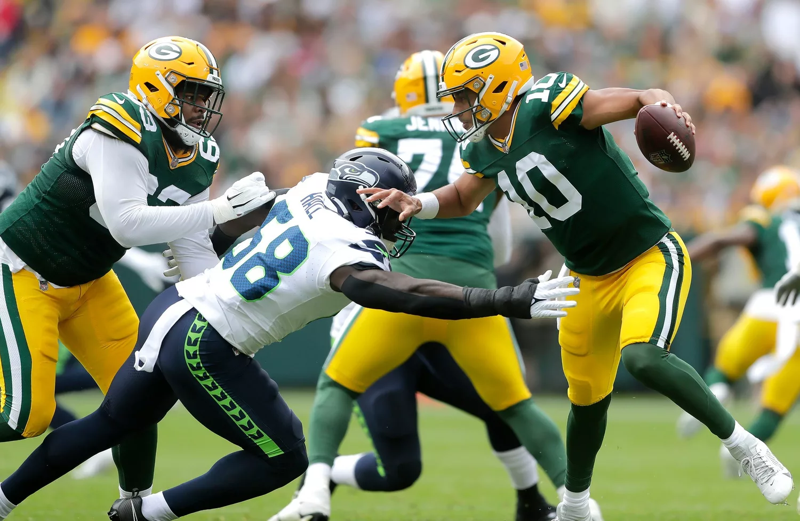
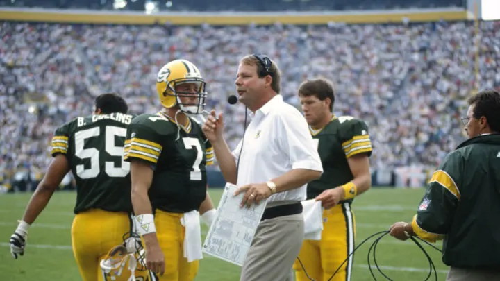
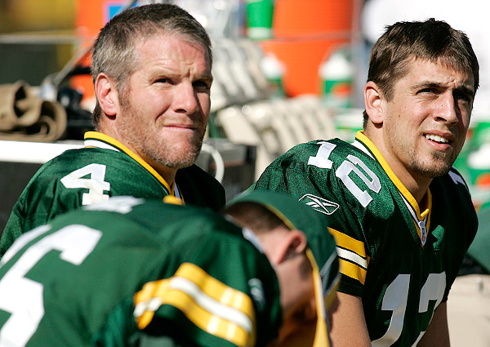

História do Green Bay Packers
Os Green Bay Packers são uma das franquias mais icônicas e historicamente ricas da NFL.
Fundados em 1919 por Earl "Curly" Lambeau e George Calhoun, os Packers são a única equipe sem
fins
lucrativos e detida pelos torcedores na NFL.
O lendário estádio Lambeau Field, inaugurado em 1957, é o campo de jogo dos Packers e é
considerado
um
dos
santuários do futebol americano.
A tradição de lotação máxima nos jogos em casa é conhecida como
"Lambeau
Leap", onde jogadores pulam nas arquibancadas após marcar um touchdown.
A Era de ouro
A era de ouro dos Packers foi nos anos 1960, com o treinador Vince Lombardi liderando a equipe a
cinco campeonatos da NFL em sete anos, incluindo as primeiras duas edições do Super Bowl.
Ainda em 60, liderado pelos 176 pontos de Paul Hornung, Lombardi ganhou o título da NFL West e jogou
a
Final da NFL contra o Philadelphia Eagles no Franklin Field,
em Philadelphia.
Os Packers perdiam por quatro pontos no fim do jogo, quando Chuck Bednarik derrubou Jim Taylor a
apenas
nove jardas da endzone e o tempo de jogo acabou.
Rivalidade com Chicago Bears
A rivalidade intensa com o Chicago Bears, conhecida como a "mais antiga rivalidade da NFL", é um
destaque
na história dos Packers. Os confrontos entre as duas equipes são sempre aguardados pelos
torcedores.

Em 1996, os Packers venceram o Super Bowl XXXI sob o comando do treinador Mike Holmgren e do
quarterback
Brett Favre, consolidando seu retorno ao topo da NFL.

A posição de quarterback continuou sendo uma força para os Packers com a transição de Favre para Aaron Rodgers, que levou a equipe à vitória no Super Bowl XLV em 2010.
